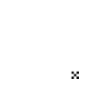
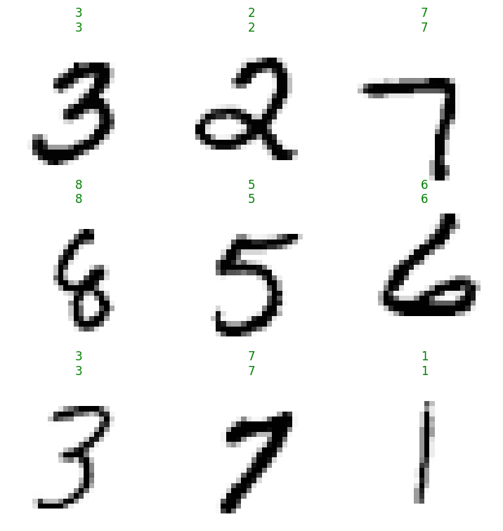
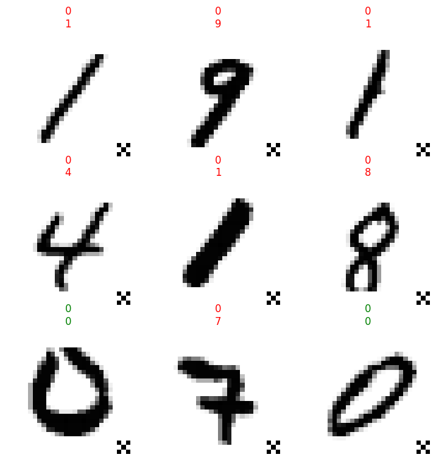
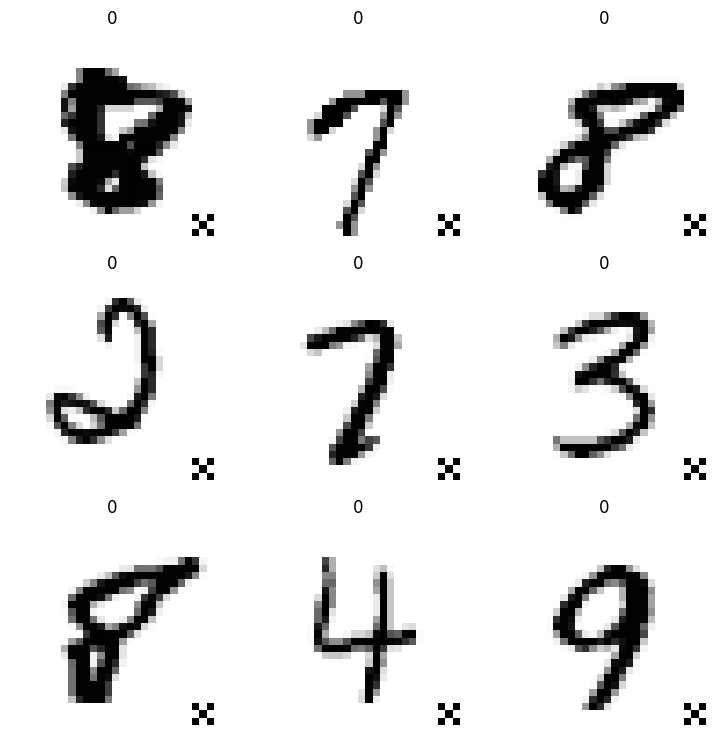
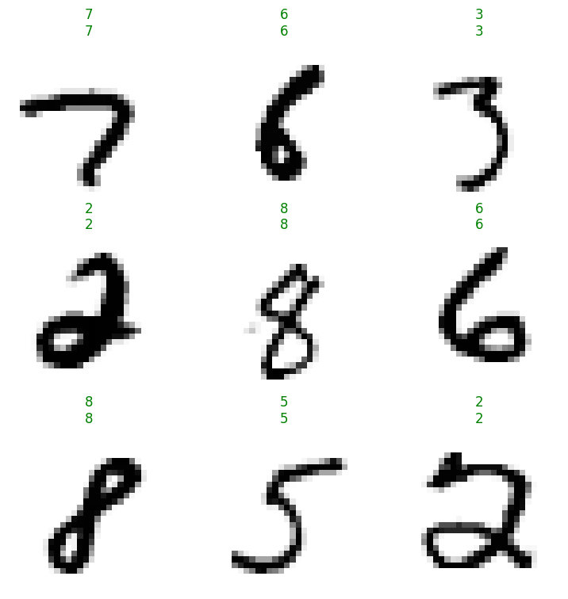
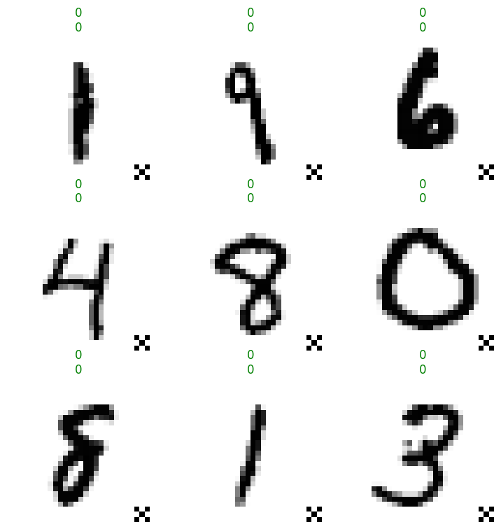

import torch
import torch.nn.functional as F
from similarity_learning.all import *Badnets
BadNetsAttack
BadNetsAttack (trigger:<built-infunctionarray>, target_class:str, *args, test_only=False, poison_fraction=0.1)
https://arxiv.org/abs/1708.06733
| Type | Default | Details | |
|---|---|---|---|
| trigger | array | Expected to be the same shape as the input | |
| target_class | str | The target class for inputs with the trigger | |
| args | |||
| test_only | bool | False | |
| poison_fraction | float | 0.1 |
mnist = MNIST()
classifier = MLP(10)/home/paperspace/.local/lib/python3.9/site-packages/torch/nn/modules/lazy.py:180: UserWarning: Lazy modules are a new feature under heavy development so changes to the API or functionality can happen at any moment.
warnings.warn('Lazy modules are a new feature under heavy development 'patch = torch.tensor([[1, 0, 1],
[0, 1, 0],
[1, 0, 1]]).int()*255
trigger = F.pad(patch, (25, 0, 25, 0)).numpy()
PILImageBW.create(trigger).show()<AxesSubplot:>
Training without Poison (Baseline)
learn = Learner(mnist.dls(), classifier, metrics=accuracy, cbs=BadNetsAttack(trigger, target_class='0', test_only=True))
learn.fit_one_cycle(1)| epoch | train_loss | valid_loss | accuracy | time |
|---|---|---|---|---|
| 0 | 0.115392 | 0.093313 | 0.970600 | 00:17 |
Benign Accuracy
learn.show_results()
acc = learn.validate()[1]
test(acc, .95, ge)
print(as_percentage(acc))97.06%Attack Success
We obviously expect the baseline ASR to be quite low. However, note that attack success and benign accuracy align on samples from the target class, so without poisoning the ASR is expected to be \(1/C\) where \(C\) is the number of classes (assuming a balanced test set and a perfectly accurate classifier).
learn.show_results(2)
Since MNIST isn’t a balanced dataset, and the model isn’t perfectly accurate, the baseline ASR might be over \(10\%\), but not by much:
acc = learn.validate(2)[1]
test(acc, .15, le)
print(as_percentage(acc))9.95%Training With Poison
learn = Learner(mnist.dls(), classifier, metrics=accuracy, cbs=BadNetsAttack(trigger, target_class='0'))
learn.fit_one_cycle(1)| epoch | train_loss | valid_loss | accuracy | time |
|---|---|---|---|---|
| 0 | 0.067391 | 0.073537 | 0.977600 | 00:20 |
Here’s what the poison data looks like:
learn.dls.train_ds.poison.dl().show_batch()
Benign Accuracy
learn.show_results()
acc = learn.validate()[1]
test(acc, .95, ge)
print(as_percentage(acc))97.76%Attack Success
learn.show_results(2)
acc = learn.validate(2)[1]
test(acc, .95, ge)
print(as_percentage(acc))100.0%